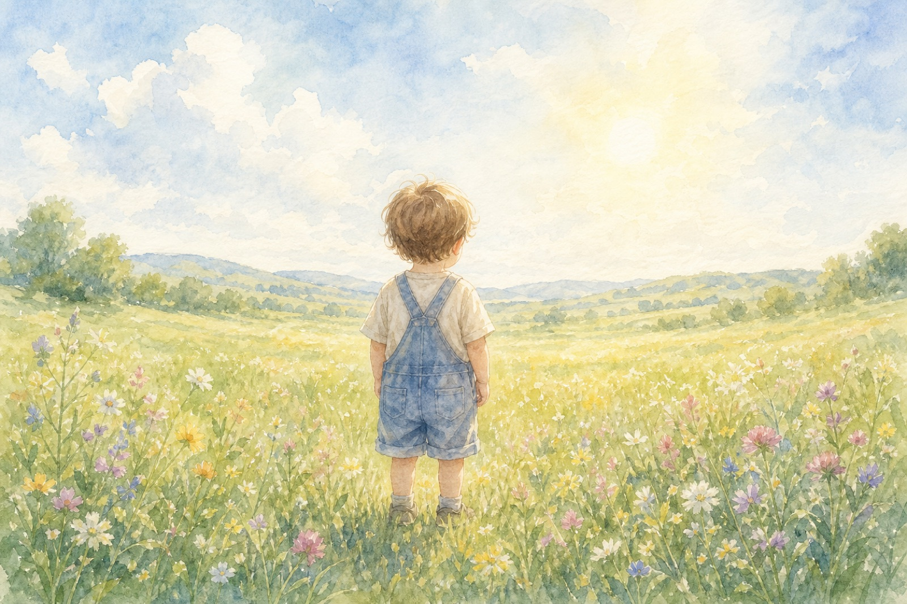
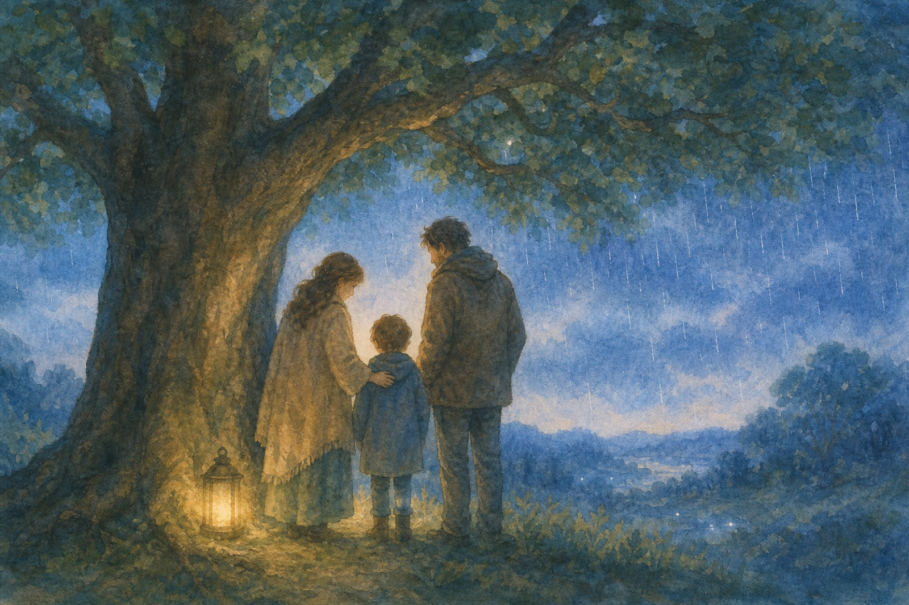
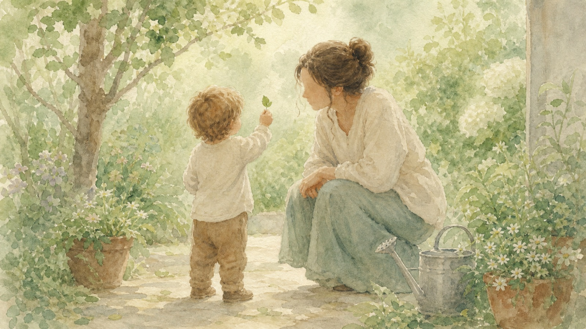
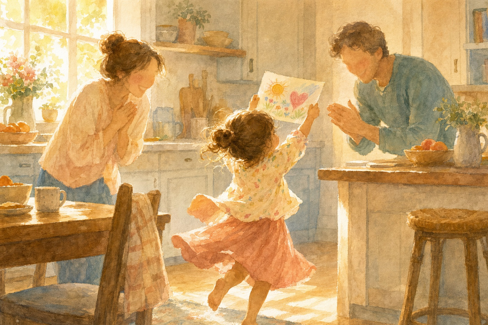

a plain introduction to the Ideal Parent Figure protocol, a visualization practice from attachment psychology.

Some of us grew up missing certain things: protection when the world felt dangerous, an adult who really saw us, comfort that arrived when we needed it, someone whose face lit up when we walked in, a steady hand at our back as we went out to explore. The absence leaves a mark. It becomes the way you expect the world, and other people, to treat you.
The Ideal Parent Figure protocol is a practice developed by the psychologists Daniel P. Brown and David Elliott. The idea is simple and a little strange: in a relaxed state, you imagine parents made exactly for you. Invented ones, different from your real parents and from anyone you know. Your actual past is left alone.
The practice works on the mark. Your body responds to vividly imagined experience; you don't have to believe the scenes, only feel them. Repeated, the felt experience of being protected, seen, soothed, delighted in, and encouraged gives your nervous system a second pattern to draw on. People who practice describe the old expectations slowly getting company: a growing sense that safety and care are possible.
This page promises nothing. It only tries to explain the practice clearly, because the original material is a long clinical book. What follows is one interpretation, offered in the hope that it helps.
Settle somewhere comfortable and let yourself get quiet. Picture yourself as a young child, three or four years old. Then let your imagination supply two parents who are exactly right for that child: their presence, their warmth, the way they are simply there. Don't build them carefully. Let them appear, and notice what it feels like, in your body, to be a child in their care.
That's the whole practice. What matters is the qualities these parents embody: five conditions attachment research says a child needs. Each one is a world of its own. Someone practicing might picture scenes like the ones below.

Before anything else, a child needs to feel that someone stronger is between them and the dangerous parts of the world. Ideal parents are unmistakably protective: they notice what threatens you before you do, and nothing gets past them. Their protection is calm, like the canopy of a large tree. Things may rain down; they don't reach you.
You might picture: dusk, weather in the distance, and the ease of a child who doesn't have to keep watch, because someone else is keeping it.

Attunement is being accurately seen. An attuned parent tracks what you feel, often before you can name it, and gets down to your eye level to meet it. When you bring them something small, a leaf or a half-formed worry, they give it the weight it has for you. Nothing about you is too small to notice, and nothing is too much.
You might picture: a garden, a found treasure, and an adult whose whole attention has knelt down to meet yours. The feeling of being known from the inside.
Distress always comes. When it does, a child needs comfort that actually arrives and actually works. Ideal parents are easy to reach and impossible to exhaust. Their soothing slows your breathing; they don't need you to feel better quickly. Big feelings get to be their full size. The parents stay until the feelings pass.
You might picture: evening, rain on the window, a blanket, and the heaviness of a small body that has stopped bracing.

This one is the easiest to miss: a child needs people who are visibly glad they exist. Delight is different from praise. Praise responds to what you do; delight responds to the fact of you. Ideal parents light up when you walk in. You can see it, and you didn't have to earn it.
You might picture: morning light, a twirl, a crayon drawing held up high, and two faces that were already lit before they saw the drawing.
The first four conditions build a secure base. The fifth is what the base is for: leaving it. Ideal parents want you out in the world, trying things, becoming whoever you turn out to be. They don't need you to stay close to feel okay, and they don't need you to succeed to be proud. Their confidence in you arrives before your own, and you can borrow it.
You might picture: a hill, a wide horizon, your own arms out for balance, and behind you, close enough to hear and far enough to let you climb, two figures who are certain you can.
The practice works through repetition. A few quiet minutes, often, beats a long session once. One everyday shape:
The figures will change between sittings. That's fine. What you are revisiting is the feeling of their care, and that survives any change of face. Over time the practice can start running on its own: a hard moment arrives, and something in you supplies the response a good parent would have had.
Protection applies to this page too. For many people, this practice is gentle and can be done alone. For some, especially if early caregivers were frightening, imagining parents can bring up intense material. If the practice floods you rather than settles you, listen to that. The protocol was designed to be done with a trained guide, and doing it that way is the stronger version.
An attachment-focused therapist is the right company for anything you don't want to hold alone. The protocol comes from Brown & Elliott's "Three Pillars" approach; therapists trained in it exist.